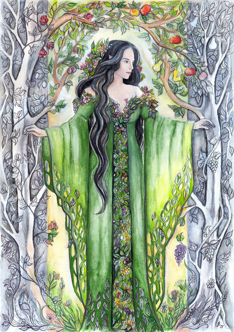

Creation
Once Valar Yavanna discovered Valar Aule's children, the dwarves, whom she knew would want to cut trees, she requested Eru Iluvitar to create the Ents as guardians of the forests.
Once Valar Yavanna discovered Valar Aule's children, the dwarves, whom she knew would want to cut trees, she requested Eru Iluvitar to create the Ents as guardians of the forests.
Ents were very slow creatures in general, not because they couldn't go faster, but because that is how they choose to live.
During the meeting of the Entmoot, it took them 3 days to come up with anything that you could feasibly consider a plan. This is due to their very slow way of talking.
Of course, from time to time younger ents would rebel against this way of living but their elders would not mind but instead simply ignore the younger ones.
Ents look as if they are living trees. They seem to take the form of the specific species of tree they were assigned to protect. An example of this is how Quickbeam resembles Rowan trees, the same species which he guards.
Just like how trees vary greatly in shape and size, so do the Ents. Ents can vary in number of fingers and toes, height, width.
As you would expect from quite literally walking towers, they are very strong. During the destruction of Isengard, Ents used their massive arms to swing boulders towards the tower of Orthanc, leading to the tower's inevitable destruction.
Due to the mysterious history of the Ents, not much is known of their historical figures besides one. The oldest Ent and quite possibly the oldest living child of Iluvitar, Treebeard. Treebeard is known as the oldest Ent and as such, the wisest. He lead the Ents on their last stand, the destruction of Isengard.